Cambodia Index: - 1 - 2 - 3 - 4 - 5 - 6 - 7 - 8 - 9 - 10 - 11 - 12
This was the second day of the Leadership Conference. This time Eric and I got to attend the whole thing and it was very good. During the conference, a team went back to the orphanage that they painted on Thursday to put the finishing touches on the building. I have a few pictures from that thanks to Gretchen.
That afternoon we all went to the dedication ceremony for the
orphanage. It was very moving. Then later that night it was
time for another night of Festival. Fun!!
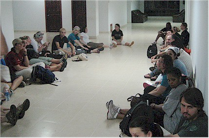
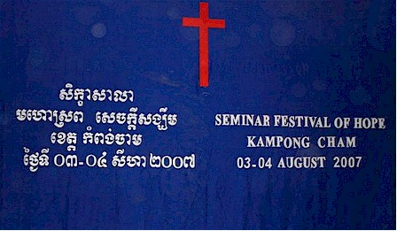
Sometimes they were VERY early!
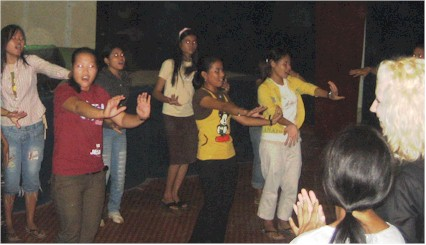
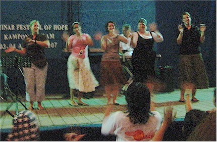
the whole auditorium. (Thankfully I got to stay put!)
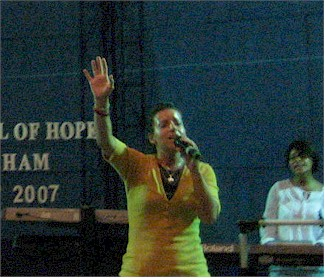
It was VERY hot in there, especially up on stage.
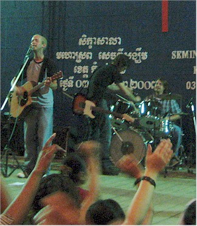
issues. Here Sam's mike kept falling out of the stand.
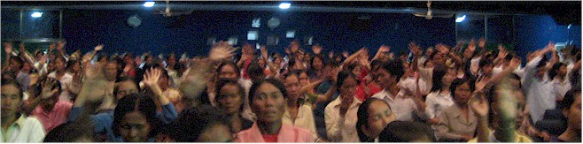
It was great to see them really worshipping, they were totally into it.
Pastor Terry gave a great talk
about getting out of the boat.
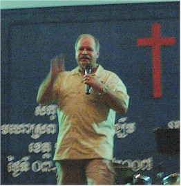
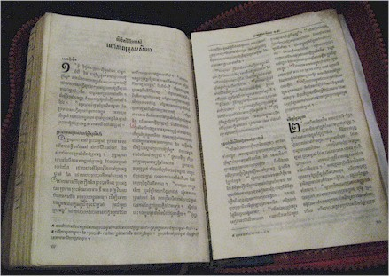
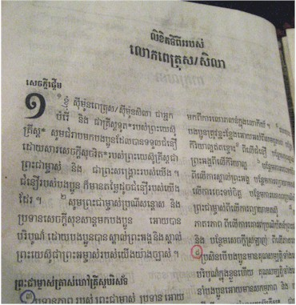
The Bible in Khmai - how cool looking is that?
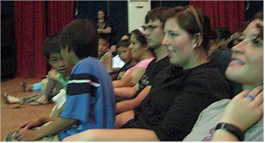
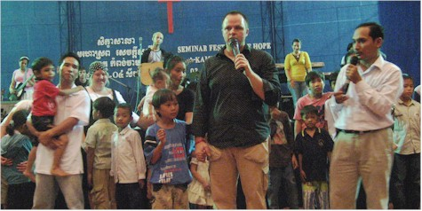
of them and it was extremely moving.
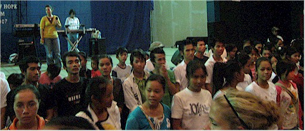
The young people down front for prayer. Recognize
Soviet in the center?
Our faithful translator Sam is slightly to the right and further back as well.
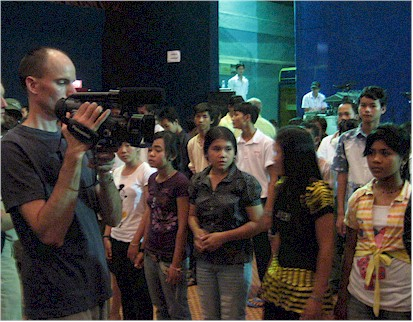
with the kids at this point so Eric took over
duties as videographer.
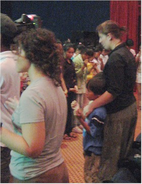
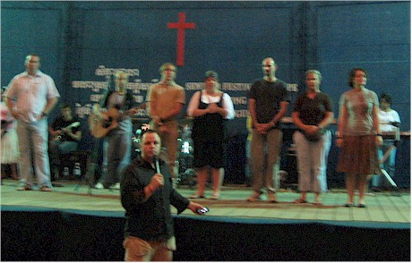
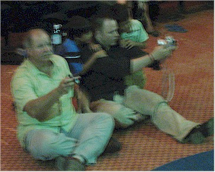
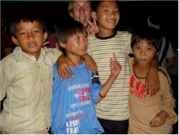
kids taking a self-portrait.
subject of more pictures!
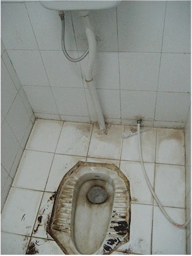
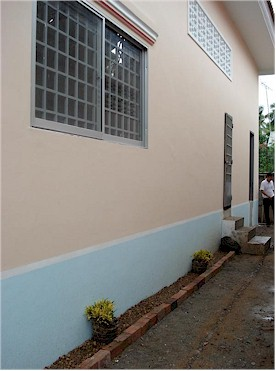
facility. Little did I know, this was one of the cleanest
"squatters" I would find!!
were putting the finishing touches on the orphanage
they had painted earlier.
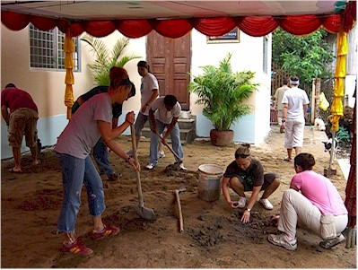
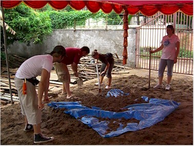
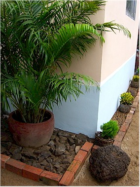
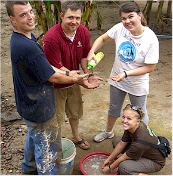
heading to the Leadership Conference from there.
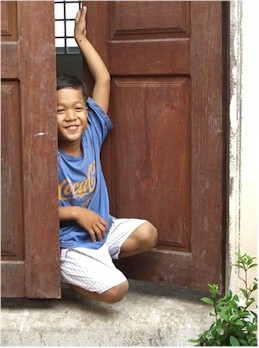
in the door of his soon-to-be
new home.
We went back to the hotel for lunch, then to the
Ty Muoy Village Hope Center for the dedication ceremony.
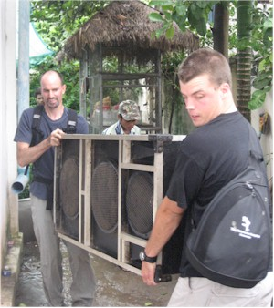
Eric & Andrew were enlisted to help carry a large speaker
to the presentation area. If only we'd known it wasn't really
needed - they had the sound needs well covered!
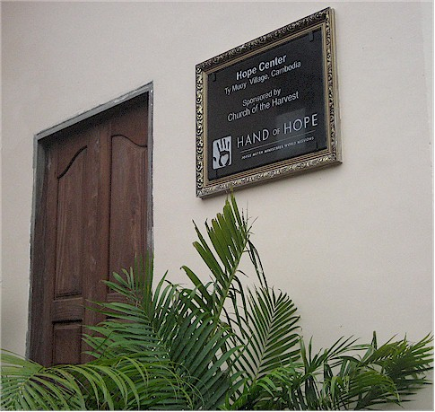
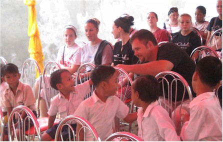
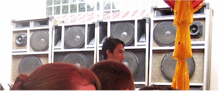
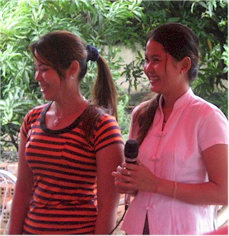
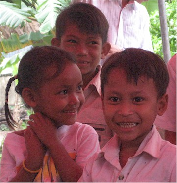
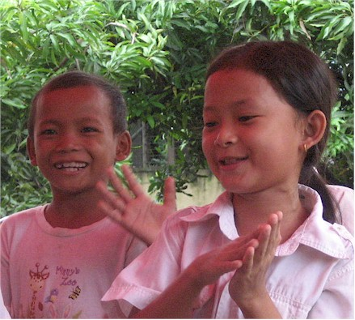
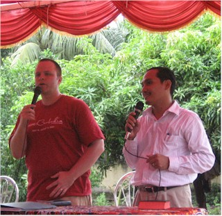
Here Pastor David shares with the crowd.
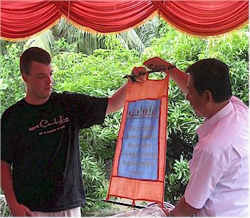
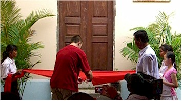
The ribbon cutting ceremony.
He said the greatest thing to us, "I reached up my hand and
prayed for help and Church of the Harvest took that hand and
helped me."
A view of the inside of the orphanage -
it is not quite finished yet, but it's close!
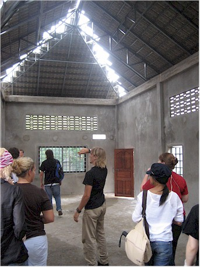
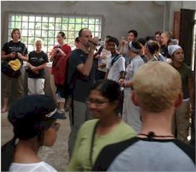
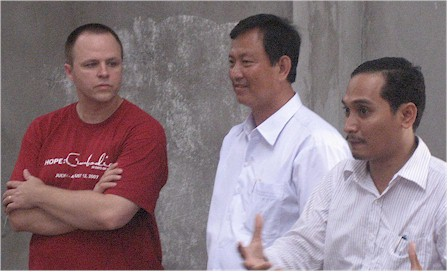
were amazed that Americans would travel all that way to spend days doing
labor for the benefit of orphans. Of course, we were glad to do it, but to them
it seemed very surprising.
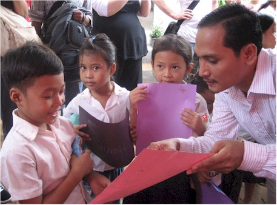
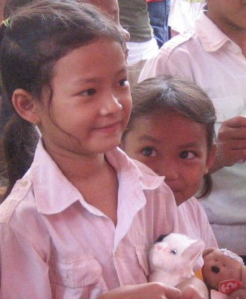
created for the Cambodian children.
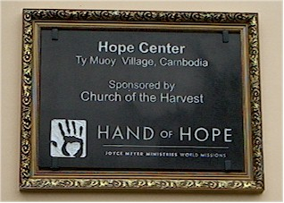
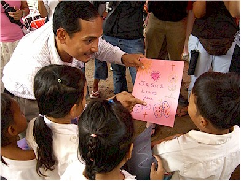
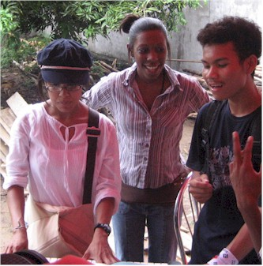
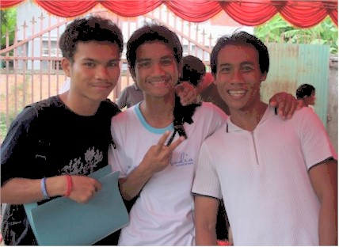
We went back to the hotel to change and then it was off for another festival night. Woo hoo!
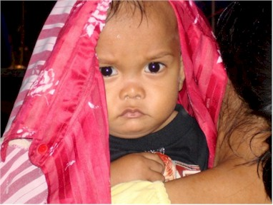
pictures of kids - she got this great
shot during one of the rainy periods.
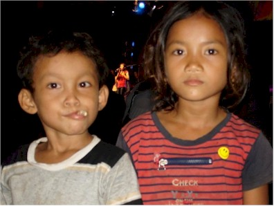
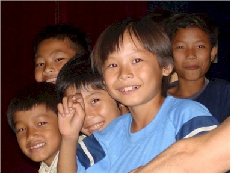
joined us for the festival too.
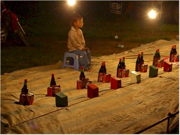
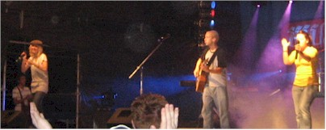
Our team, doing a great job.
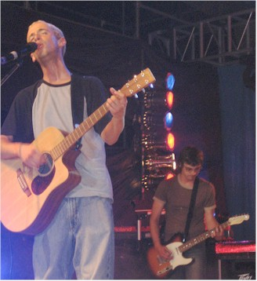
Erin - glad to have a less buggy evening than the
previous night, when bugs had been everywhere!
A look at the crowd during a break in the action.
New Life and our team sharing the stage. It was
awesome! They alternated the songs, one verse in
Khmai and one in English, the crowds loved it!
(And so did we)

Movie Moment: The picture above
in live action.
(Taken with my digital camera so the sound quality is poor.)
Cambodia Index: 1 - 2 - 3 - 4 - 5 - 6 - 7 - 8 - 9 - 10 - 11 - 12